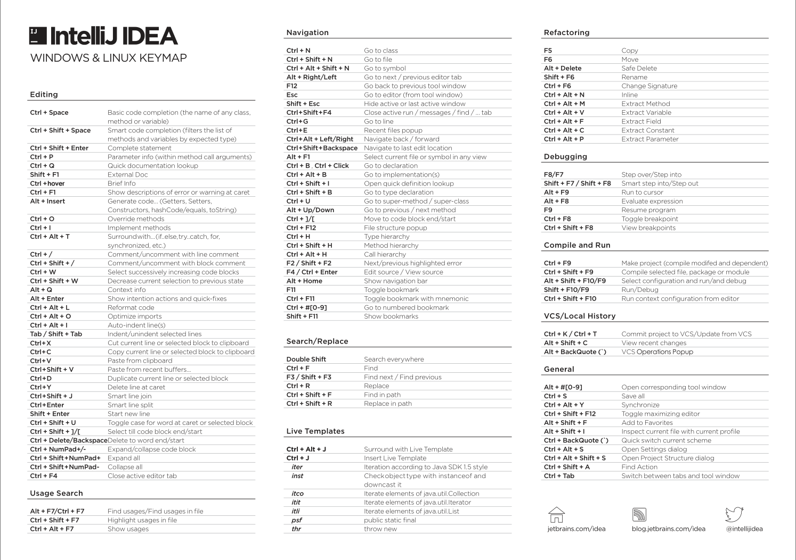
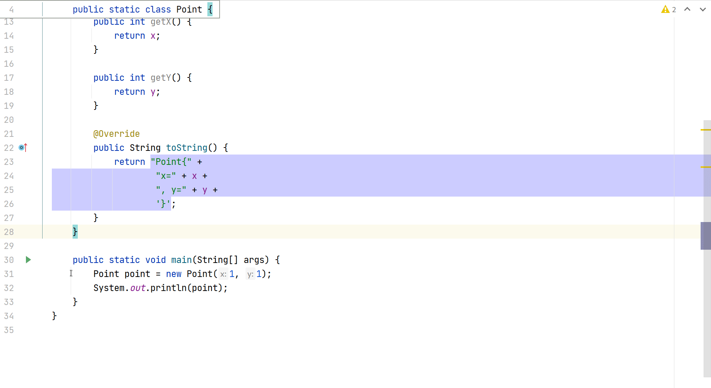
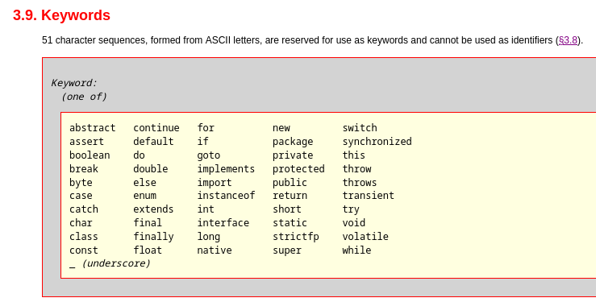
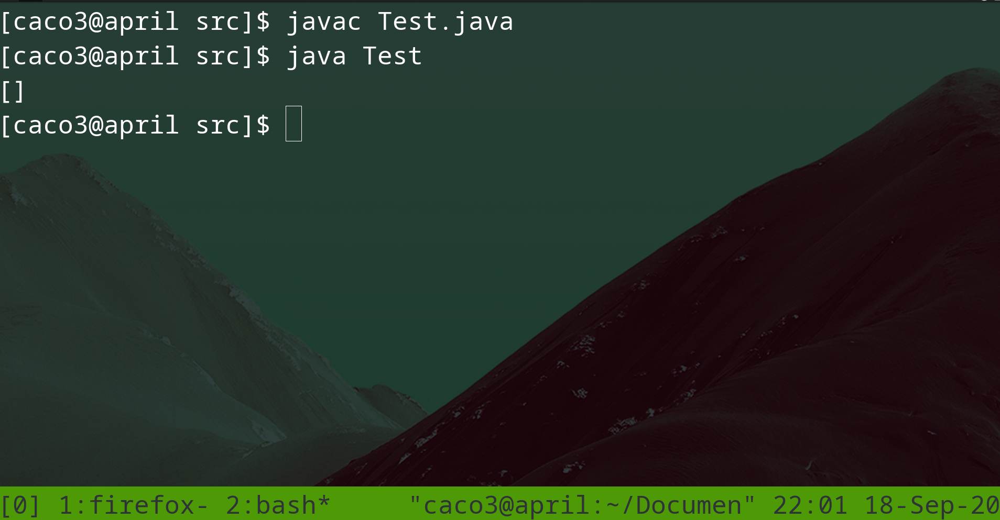

Денис Заведеев @2caco3 <happy96538@gmail.com>
Немного про Intellij IDEA
Ключевые слова языка Java
Разберем некоторые примеры программ
Quiz

Key Promoter X - плагин для IDEA, помогающий освоить комбинации клавиш
Отла́дчик (англ. debugger от bug, баг) — компьютерная программа для автоматизации процесса отладки: поиска ошибок в других программах, ядрах операционных систем, SQL-запросах и других видах кода.

Скринкасты Intellij IDEA:
Java Language Specification - ответы на все вопросы про Java формальным языком

Редко используются: assert, strictfp, transient
Ключевое слово, но нельзя использовать: _, goto, const
Многопоточность: synchronized, volatile
Ограниченные ключевые слова: open, module, requires, transitive, exports, opens, to, uses, provides, with
на данном этапе?
Sample_0_Texts
Sample_1_Primitives
Sample_2_CharactersTest
Sample_3_VariableNames
Sample_4_MethodsDemo
Sample_5_Factorial
по разобранным примерам?
Формулируем вопрос
Ответы - в таблицу
С кем-то разбираем вопрос
Для точных вычислений - BigDecimal / BigInteger
Double.NaN != Double.NaN
1.0 - double
Выполнить упражнение (сл. слайд) + п.6 плана (Seminar_2_Plan.doc)
Разобрать вопросы (Q&A_1.doc)
Написать, что было непонятно на лекциях/семинара
Написать (одно из двух, в свободной форме):
Конвертер Мили < = > Километры. 2 метода: mile2Km и km2Mile
Конвертер Градусы Фаренгейта < = > Градусы Цельсия: celsium2Farenheit и farenheit2Celsium
java.util.ScannerДо следующей субботы (26.09.2020)
Test.java(п.5 плана Seminar_2_Plan.doc)
Раскомментировать main
javac Test.java
java Test
